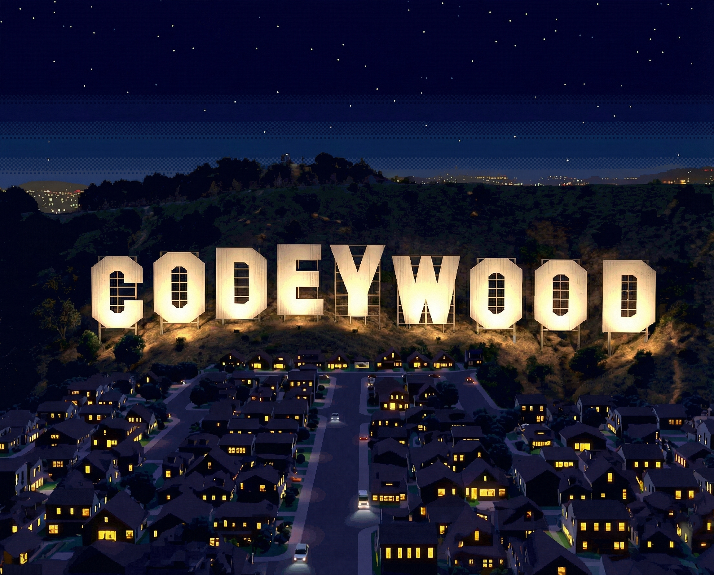

AI Video Story Generation System
From concept to episode, powered by Claude Skills
Codeywood is an open-source, modular system for autonomous AI video story generation. Using Claude Skills as instruction sets, it transforms sparse user requirements into complete episodic content.
Self-contained instruction sets that Claude reads and follows. Each skill has clear inputs, outputs, and quality gates.
Visual consistency through reference images, not just prompts. Characters and locations stay on-model across hundreds of shots.
Open source from day one. Contribute skills, improve workflows, share results. Built in public on GitHub.
Answer 8-10 questions about your show concept. Genre, protagonist, relationships, themes, setting.
CREATIVE_BRIEF.md
POWER_STACK.md
Deep character psychology, relationship matrices, episode beats, scene breakdowns.
CHARACTER_SHEETS/
EP_BEATS.md
Generate character turnarounds, expressions, locations. Build the reference library.
CHARACTER_REFS/
LOCATION_REFS/
Generate consistent shot images using references. Validate quality. Animate to video.
SHOTS_EP01/
VIDEO/
Story ─────► Character/Location ─────► Reference ─────► Shot ─────► Video
Definitions Library Images
│ │ │
└─────── Each stage uses previous stage's ──────┘
outputs as REFERENCE INPUTS
Unlike prompt-only approaches, Codeywood builds a library of locked visual references. Every shot image is generated with character and location references attached, ensuring consistency across hundreds of frames.
Production passes through sequential quality gates. Each gate must be validated before proceeding:
Gate 0 Intake complete
Gate 1 Logline locked
Gate 2 Characters complete
Gate 3 Story structured
Gate 4 Script complete
Gate 5 Story approved
Gate 6 References complete
Gate 7 Shots validated
Skills are self-contained instruction sets that Claude reads and follows. Each skill declares its inputs, produces specific outputs, and can be improved independently.
story-intake 8-10 questions to creative briefwriters-room 5-agent round-robin story developmentlogline-development Lock the loglinecharacter-creation Deep character psychologystory-structure Episode beats & scene listsscreenplay Write episode scriptsdialogue-polish Voice & subtext refinementstory-critique Quality gate evaluationstyle-guide Lock visual style DNAcharacter-design Generate character referenceslocation-design Generate location referencesstoryboards Generate storyboard gridsshot-list-generator Screenplay to shot specsshot-image-generator Reference-based shot imagesshot-quality-validator QA pass on shotsvisual-continuity-validator Cross-shot consistencyorchestrate Execute plans, invoke skills, validate gatescanon-database-manager Machine-readable source of truthreference-library-updater Improve refs from good shotsCodeywood uses a precise taxonomy to organize its components. Understanding these terms is essential for navigating the system.
High-level production pipelines tailored to specific modalities (animated series, live-action YA, vertical microdrama).
Scope: End-to-end project (5-7 phases)
Contains: Phases → Gates → Skills → Deliverables
Location: PLANS/{name}/PLAN.md
Example: The "Animated Series" plan defines 6 phases from Intake through Shot Production, with gates like "Story Structured" and "References Complete".
Self-contained, role-based instruction sets that Claude reads and follows. Each skill has a single responsibility with clear inputs, outputs, and validation criteria.
Scope: Single responsibility (story intake, character creation, etc.)
Roles: Writer, Production, Meta (Orchestration)
Location: skills/{role}/{name}/SKILL.md
Example: The "story-intake" skill conducts an 8-10 question interview and outputs CREATIVE_BRIEF.md and POWER_STACK.md.
Reusable execution patterns modeled after design pattern language. Document the sequence of steps in multi-step processes, including decision points and error handling.
Scope: Single multi-step process
Execution: Manual (Claude follows), Scripted (Python), or Hybrid
Location: WORKFLOWS/patterns/{name}.md
Example: The "writers-room" workflow defines 5 agents (Chaos Architect, Internal Logician, etc.) collaborating across 3 rounds.
Command-line tools that implement specific functionality. Called by Workflows or invoked directly by users for reproducible operations.
Scope: Atomic operations (generate image, validate file)
Language: Python
Location: scripts/generate/
Example: fal_generate.py handles image generation with flags like --hero, --identity, --location.
External APIs and their documented capabilities, limitations, and prompting best practices. Different services respond to different prompting vocabularies.
Scope: API integration documentation
Contains: TECHNIQUES.md, LIMITATIONS.md, parameter conventions
Location: references/services/
Example: Nano Banana Pro documentation covers two modes (text-to-image, multi-reference) with specific parameter formats.
PLAN (e.g., Animated Series)
└── Phase 2: Story Development
├── Gate 3: Story Structured
└── SKILLS invoked: logline-development, character-creation, story-structure
└── May reference WORKFLOWS: writers-room pattern
└── Calls SCRIPTS: fal_generate.py for visual tests
└── Uses SERVICES: Nano Banana Pro API
Plans sequence Skills. Skills implement or reference Workflows. Workflows may call Scripts. Scripts integrate with Services.
IN PROGRESS
Complete pilot script + story bible from 8-10 user questions. All core skills operational.
NEXT
All reference images + shot images generated with visual consistency.
FUTURE
2-3 minute animated scene with audio. Image-to-video pipeline.
ASPIRATIONAL
Complete 20-30 minute episode from sparse requirements. Requires breakthroughs in consistency.
git clone https://github.com/kaigani/codeywood.git
cd codeywoodRead and follow the skill instructions:
skills/writer/story-intake/SKILL.mdAnswer 8-10 questions to generate your creative brief.
Work through skills sequentially. Each builds on the previous. See QUICKSTART.md for the full guide.
Found something that works? Something that doesn't? Open an issue or PR. This project grows through community iteration.
Check out the sample project to see a complete worked example.
View Sample Project